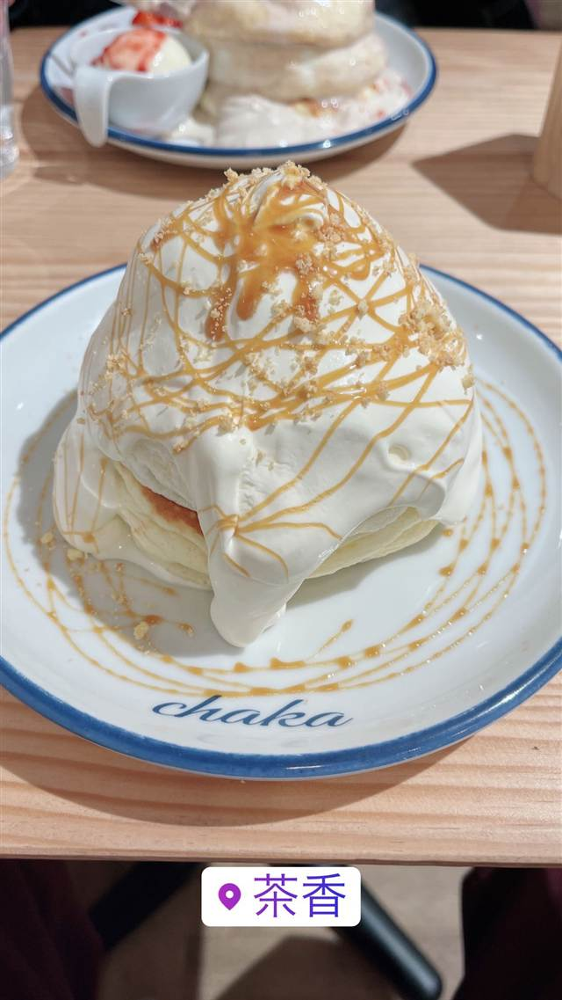

茶香(チャカ)
北海道産粉とバターミルクで注文後に焼き上げる自家製パンケーキ
茶香
北千住にあるパンケーキ専門店。マスターが長年研究を重ねた自家製パンケーキが名物で、北海道産の粉とバターミルクを使い注文を受けてからふわふわに焼き上げる。
TRIVIA
豆知識
- 以前は別の場所で営業しており、現在地に移転した経緯がある。
REVIEWS
世間の評判
3.64食べログ
予約争奪戦の人気スフレパンケーキ
- 口の中でしゅわっととろけるスフレパンケーキの食感を評価する声が多い
- 前日20時からの予約がすぐ埋まるほどの人気ぶりを指摘する声が多い
- 1人前の量が多く食べ進めると後半は満腹で苦しくなるという声もある
- 完全予約制のため当日ふらっと訪れて入るのは難しいという声もある
食べログ 口コミ548件
| 看板 | 自家製パンケーキ（バターミルク使用、注文ごとに焼き上げ） |
|---|---|
| こだわり | 北海道産の厳選した粉とバターミルクを独自配合し、鉄板の使い方まで長年研究を重ねた自家製パンケーキ。 |
| どこから | 都心 |
| 行くなら | 予約必須 |
| 営業時間 | 月・火 休み 水〜日 10:00-17:00 |
| 定休日 | 月曜・火曜 |
| 予約 | 予約可 |
| 場所 | 北千住 東京都足立区千住寿町 |
| メモ | 北千住駅西口から徒歩10分。定休日は火・水曜。 |
食べたもの：パンケーキ